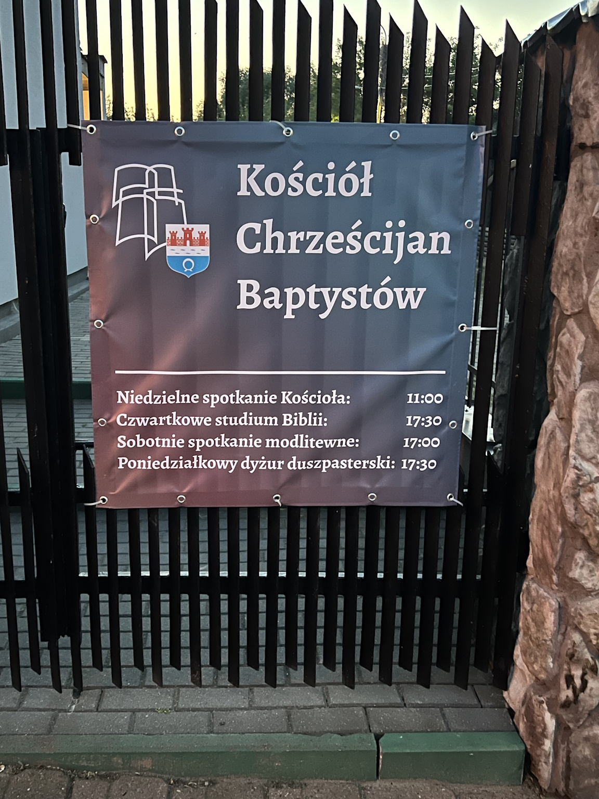

Pismo Święte za darmo!
Przyjdź i odbierz darmowy egzemplarz Pisma Świętego Starego i Nowego Testamentu (UBG). W każdy poniedziałek od godziny 17:30-20:00, podczas dyżuru duszpasterskiego, możesz nas odwiedzić i zabrać do domu swoją nową Biblię. Zapraszamy.
Słowo powitania
Cieszymy się, że trafiłeś na tę stronę. Pragniemy przekazać Ci, radosną dobrą nowinę o Królestwie naszego Pana i Zbawiciela Jezusa Chrystusa:
“Albowiem tak Bóg umiłował świat, że Syna Swego jednorodzonego dał,
aby każdy, kto weń wierzy, nie zginął, ale miał żywot wieczny”
Ta dobra nowina czyli ewangelia wzywa wszystkich ludzi o szczerym, pokornym sercu:
“Upamiętajcie się, albowiem przybliżyło się Królestwo Niebios”
Obecne społeczeństwo idzie szeroką drogą, wygodnej, niezobowiązującej religijności, “jednakże wąska jest droga i ciasna brama prowadząca do życia i niewielu jest takich, którzy ją znajdują” (Mat 7:13,14). Droga ta oznacza uznanie swojej grzeszności, szczere nawrócenie i podążanie śladami Pana Jezusa Chrystusa. Jak to zrobić? To jest właśnie sedno ewangelii:
“Uwierz w Pana Jezusa, a będziesz zbawiony, ty i twój dom.”
Ten kto prawdziwie uwierzył, że Jezus Chrystus jest prawdziwym, obiecanym Mesjaszem, Panem i Królem, wierzy w jego dzieło zbawienia dokonane na krzyżu, ten otrzymuje zadatek Ducha Świętego, który uzdalnia go do prowadzenia świętego życia.
“Albo czy nie wiecie, że niesprawiedliwi Królestwa Bożego nie odziedziczą?
Nie łudźcie się! Ani wszetecznicy, ani bałwochwalcy ani cudzołożnicy, ani rozpustnicy, ani mężołożnicy, ani złodzieje, ani chciwcy, ani pijacy, ani oszczercy, ani zdziercy Królestwa Bożego nie odziedziczą.
A takimi niektórzy z was byli; aleście obmyci, uświęceni, i usprawiedliwieni w imieniu Pana Jezusa Chrystusa i w Duchu Boga naszego ”

Wejdź na tę wąską drogę chrześcijańską, spotkaj się z nami. Zgromadzamy się każdej niedzieli o godzinie 11:00 oraz w każdy czwartek o godzinie 17:30 . Przyjdź takim jakim jesteś, bo nasz Pan również powiedział:
“Pójdźcie do mnie wszyscy, którzy jesteście spracowani i obciążeni,
a Ja wam dam ukojenie.
Weźcie na siebie moje jarzmo i uczcie się ode mnie, że jestem cichy i pokornego serca, a znajdziecie ukojenie dla dusz waszych.
Albowiem jarzmo moje jest miłe, a brzemię moje lekkie.”
Prawdziwym sensem ludzkiego istnienia jest miłość do Boga i każdego człowieka. Bóg żywy i prawdziwy jest niewyczerpanym źródłem tej miłości, gdyż “Bóg jest miłością” (1 Jan 4:16). Nic piękniejszego nie może spotkać człowieka, jak doświadczyć tej miłości, której źródłem jest Bóg.